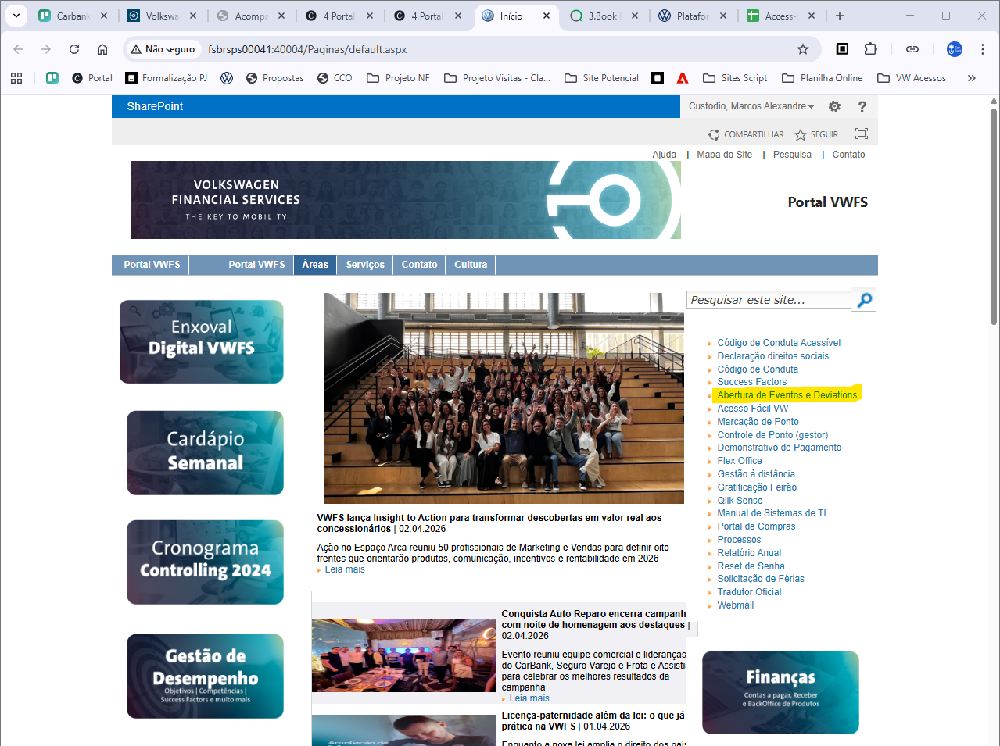
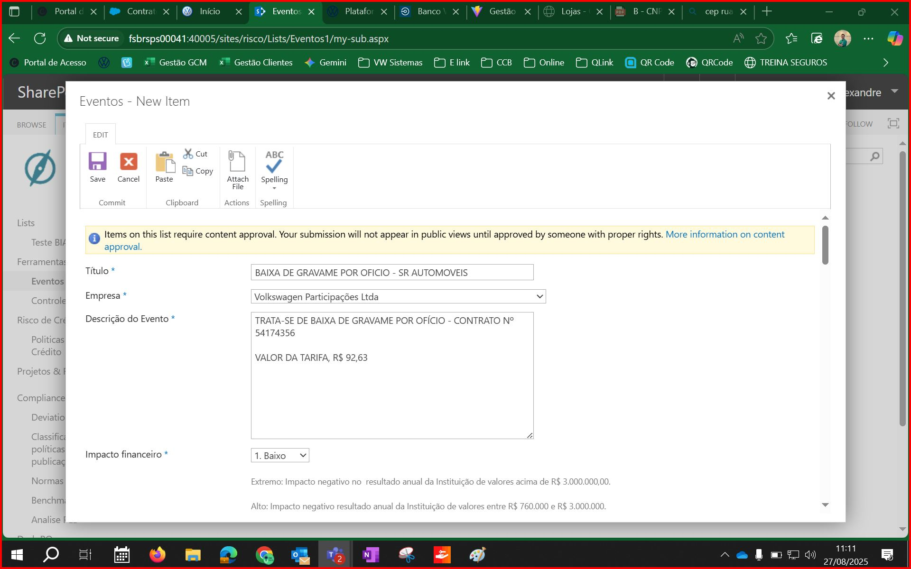
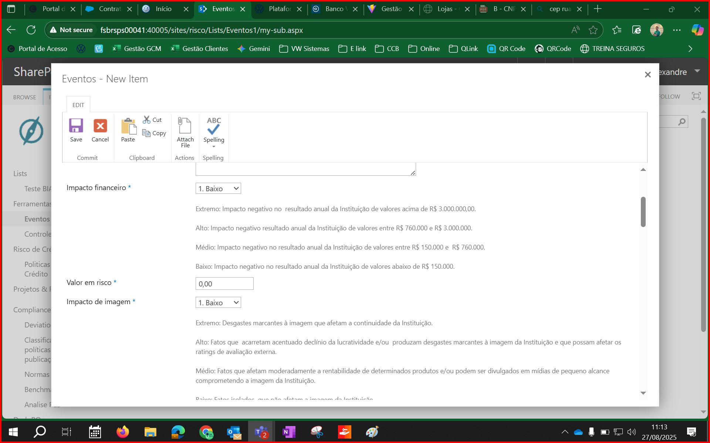
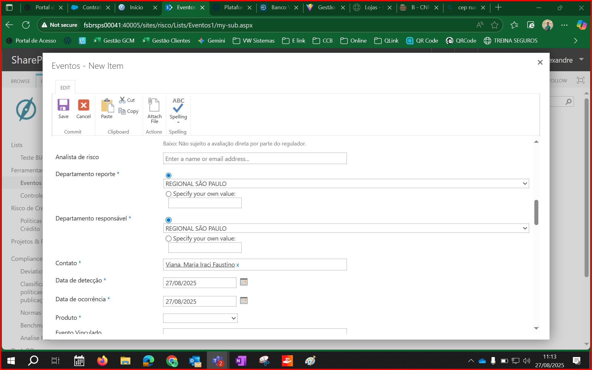
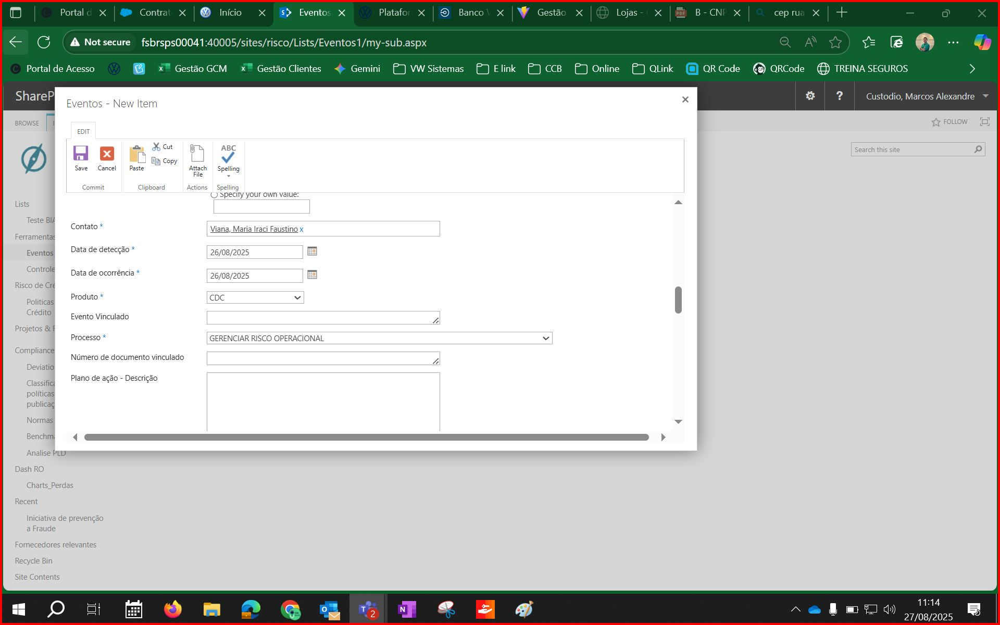
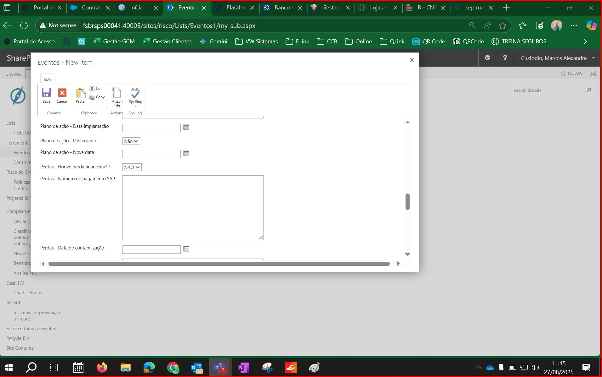
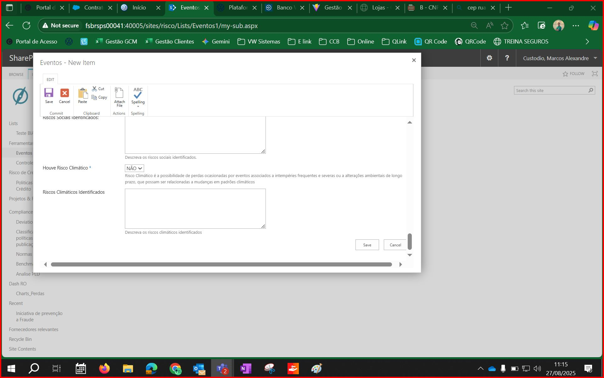

0
Acesso ao Portal VWFS — Tela Inicial

Portal VWFS no SharePoint. No menu lateral direito, acesse o link Abertura de Eventos e Deviations.
1
Formulário — Dados Básicos do Evento

Preencha o Título, selecione a Empresa e insira a Descrição do Evento com detalhes do ocorrido. Informe também o Impacto Financeiro.
2
Formulário — Impacto Financeiro e de Imagem

Selecione o nível de Impacto Financeiro (Extremo / Alto / Médio / Baixo), informe o Valor em Risco e o Impacto de Imagem.
3
Formulário — Departamento e Datas

Preencha Departamento Reporte, Departamento Responsável, Contato, Data de Detecção e Data de Ocorrência.
4
Formulário — Produto e Processo

Selecione o Produto (ex: CDC), informe Evento Vinculado se houver, e o Processo (ex: Gerenciar Risco Operacional). Adicione o Plano de Ação se aplicável.
5
Formulário — Plano de Ação e Perdas

Informe datas do Plano de Ação, se foi postergado e nova data, além dos campos de Perdas Financeiras (número SAP e data de contabilização).
6
Formulário — Riscos Sociais e Climáticos

Indique se houve Risco Social e/ou Risco Climático, descrevendo os identificados. Após revisar tudo, clique em Save para registrar o evento.